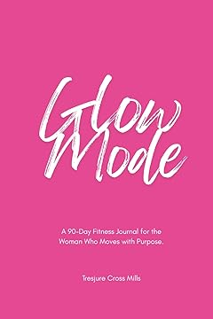
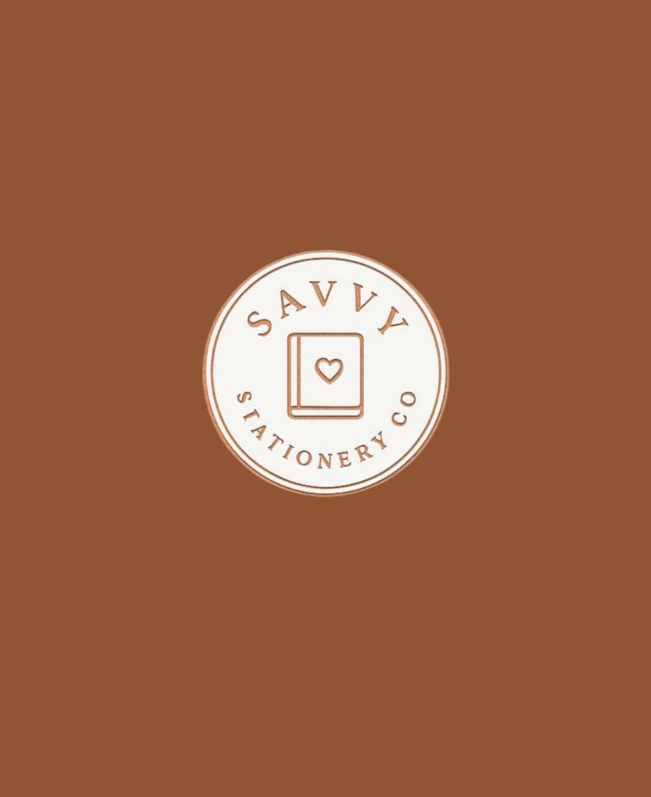

Reflection
Guided growth for everyday life
From self-discovery prompts to mindset-building pages, Tresjure creates thoughtful tools that help readers reconnect with themselves and move forward with intention.
Tresjure Cross Mills is the creator of guided self-reflection journals, wellness tools, fitness planners, and lifestyle notebooks designed to help women move with clarity, confidence, and purpose.
From self-discovery prompts to mindset-building pages, Tresjure creates thoughtful tools that help readers reconnect with themselves and move forward with intention.
Her wellness journals are designed to support consistent habits, intentional movement, and a stronger relationship with personal care.
Beyond the page, Tresjure connects books, social storytelling, professional presence, and beauty-forward branding into one elevated personal platform.
Whether you're discovering the books, reviewing the brand story, or reaching out for media and collaboration, each page is built to guide you quickly.
Explore Tresjure's background, credentials, creative mission, and the purpose behind the brand.
Visit the About page →See the guided journal, wellness, and stationery lineup in one focused place built for readers and buyers.
Visit the Books page →Review speaking topics, collaboration angles, and direct contact information for professional outreach.
Visit the Media page →The site now makes it easier for visitors to understand the offer, trust the brand, and choose the next right action.
Each featured product is rooted in reflection, wellness, or everyday creative expression, making the brand promise easier to understand at a glance.
Visitors can move directly into buying, professional outreach, or social follow-up through Amazon, email, Instagram, LinkedIn, and She So Savvy Social.
With supporting pages, crawl files, and structured data, the site now gives search engines more context than a single landing page alone.
Tresjure Cross Mills is a multidisciplinary creator dedicated to helping women grow through reflection, wellness, and purposeful living. She earned her Associate of Arts in Creative Communication with honors, graduating in the top 16% of her class.
As a proud member of the Phi Theta Kappa honor society, she pairs academic excellence with heartfelt encouragement. Her brand world spans guided journals, fitness planners, stationery, beauty-centered services, and a growing professional presence across social and publishing platforms.
Thoughtfully crafted guides for self-discovery, fitness, and everyday creativity.
A 30-day guided self-reflection journal created to help readers pause, process, and move forward with intention. Each page creates space for clarity, personal growth, and honest conversation with yourself.

For the woman who moves with purpose. Track your movement, nutrition, mindset, and progress with daily check-ins, macro guidance, affirmations, and wellness reflections.

100 pages of college-ruled writing space in a classic 7.5 x 9.25 format. Perfect for school, work, or everyday notes. Available in multiple warm-toned cover designs.
Discover the platforms, products, and services that make up the full Tresjure experience.
Shop journals, planners, and notebook collections from Tresjure's published catalog in one place.
Follow Tresjure's professional profile for networking, speaking visibility, and creator updates.
See brand moments, inspiration, and updates from the growing Tresjure community on social.
Explore Tresjure's beauty and styling brand for appointments, polished looks, and elevated personal-brand moments.
"Your journey of self-discovery begins with a single moment of reflection. Give yourself permission to grow."— Tresjure Cross Mills
For speaking opportunities, collaborations, media features, customer questions, or brand partnerships, reach out through any of the channels below.
These answers make it easier for people to understand what Tresjure offers and what to do next.
The official Amazon author storefront is linked throughout this site and is the fastest place to shop the current books, journals, and notebooks.
The collection includes guided self-reflection journals, a fitness journal, and stationery notebooks built for practical everyday use.
Use the email, phone, or LinkedIn contact options on the site for collaborations, media requests, and professional inquiries.
It is part of the broader Tresjure brand ecosystem and highlights beauty and styling services alongside the author and creator platform.
Whether you're here for guided reflection, wellness structure, speaking inquiries, or creator collaboration, Tresjure has a place for you to begin.